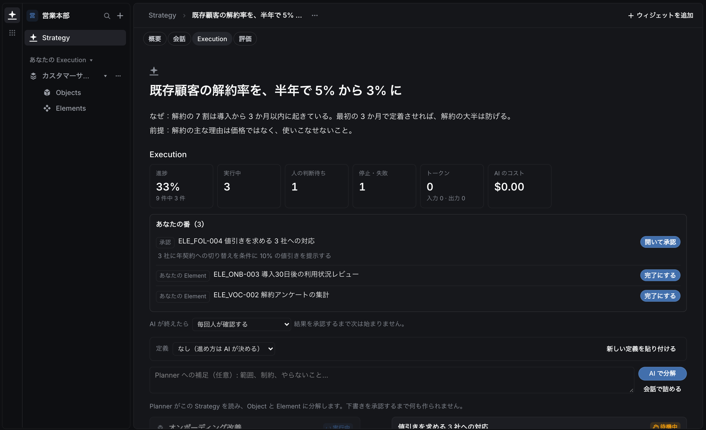
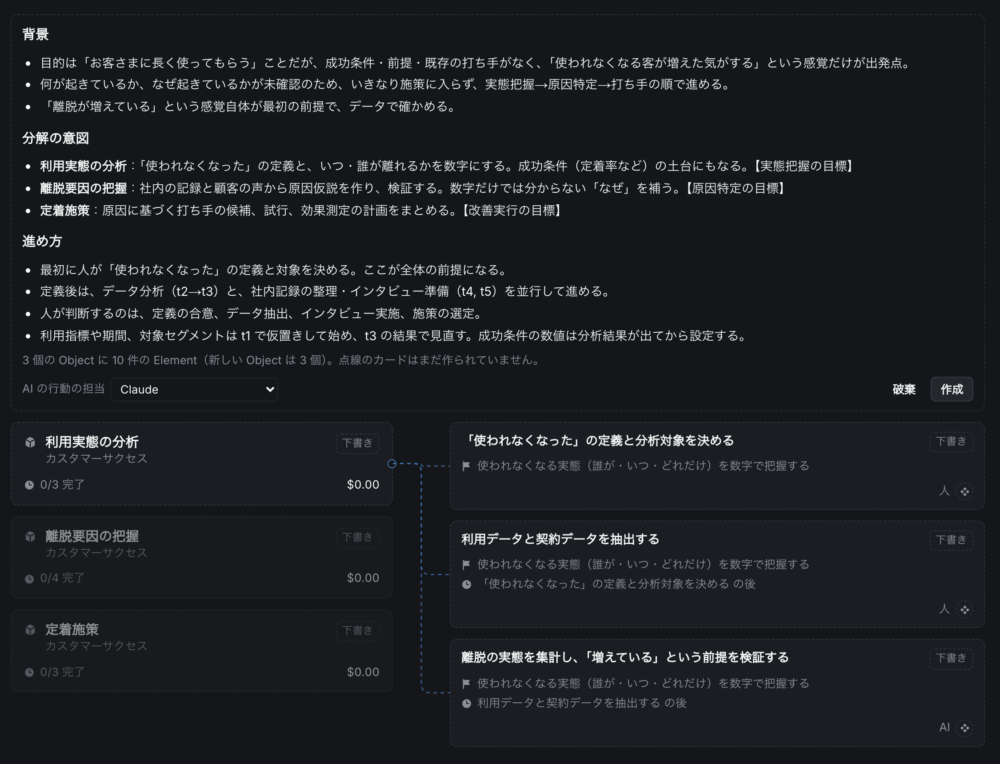
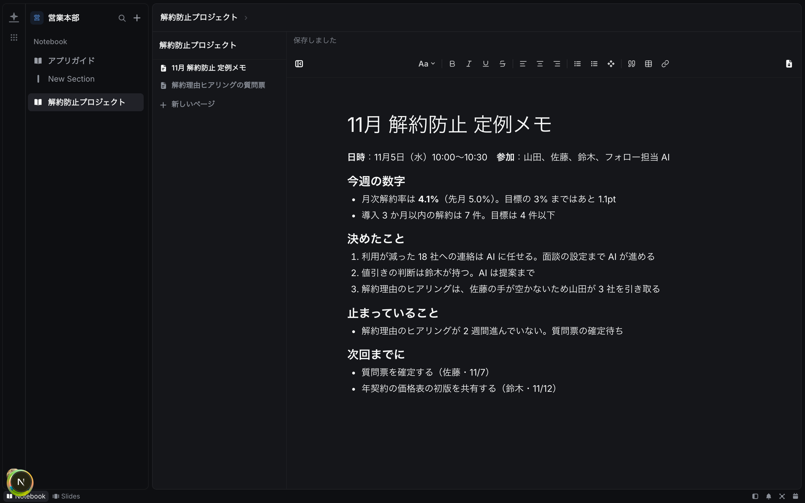
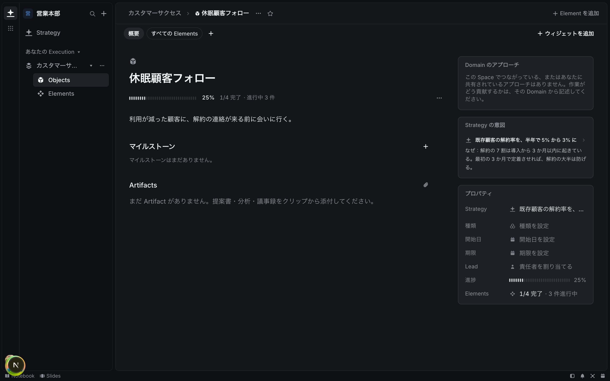

ユースケース
こんな課題に、
こう使う。
組織が違っても、止まる場所は似ています。よくある 4 つの課題と、Alcon での使い方です。
カスタマーサクセス・営業
解約を減らしたいが、
解約を減らしたいが、
手が回らない。
よくある状態
- 解約率が上がっているのは分かるが、誰が何をしているか見えない
- 利用が減った顧客への連絡が、忙しい週は止まる
- 値引きを出すかどうかの判断が、担当ごとにばらばら
Alcon ではこう使う
- 方針「解約率を半年で 5% から 3% に」と、成功条件の数字を置く
- オンボーディング・休眠顧客フォロー・解約理由の把握に仕事を分ける
- 利用が減った顧客への連絡と面談の設定は AI に任せ、値引きは人が判断する
変わること
解約率と、止まっている仕事が方針の画面に並ぶ。連絡は AI が毎週続け、人には値引きのような判断だけが届く。

経営企画・新規事業
方針はあるが、
方針はあるが、
何から手をつけるか分からない。
よくある状態
- 「顧客に長く使ってもらう」のような方針が、会議のたびに言い直される
- 担当を決めても、最初の一歩が人によって違う
- やってみたが、効いたかどうか測れない
Alcon ではこう使う
- 思っていることを、そのまま方針として書く
- AI に分けさせ、前提の確認・原因の特定・打ち手の順に下書きを作る
- 下書きを読んで補足し、納得したら「作成」で仕事にする
変わること
会議の翌日には、誰が何をいつまでにやるかが決まっている。前提が崩れたら、方針の画面で分かる。

部門長・マネージャー
定例会議が、
定例会議が、
進捗確認で終わる。
よくある状態
- 会議の半分が「あれどうなった？」の確認
- 報告資料をつくるために、前日に半日かかる
- 決めたことが議事録に埋もれ、次の会議でまた議論する
Alcon ではこう使う
- 定例のテーマごとに方針を置き、仕事をぶら下げる
- 進み具合と止まっている仕事は、会議の前に方針の画面で見ておく
- 議事録はノートに書き、決めたことは仕事として登録する
変わること
進捗の読み上げがなくなり、会議は「止まっていること」と「決めること」だけになる。

業務改善・プロジェクト
担当が変わると、
担当が変わると、
仕事が止まる。
よくある状態
- 前任者がどこまでやったか、聞かないと分からない
- なぜその方法にしたのか、理由が残っていない
- 引き継ぎの資料づくりに時間がかかる
Alcon ではこう使う
- 方針に「なぜ」と「前提」を書いておく
- 仕事のまとまりごとに、関係する資料をノートにまとめる
- 担当を付け替えるだけで、続きから始められるようにする
変わること
引き継ぎのための資料をつくらなくていい。新しい担当は、方針と仕事と記録を開けば続きが分かる。

始め方
まず、ひとつの方針から。
組織全体を一度に変える必要はありません。いちばん「どうなった？」が多いテーマをひとつ選んで始めてください。
- 1
方針をひとつ書く
何を、いつまでに、なぜ。数字があれば数字で。
- 2
いまの仕事を並べる
その方針のために動いている仕事と、担当を置く。
- 3
AI に任せる仕事を選ぶ
任せる仕事と、AI の結果を毎回確認するかを決める。